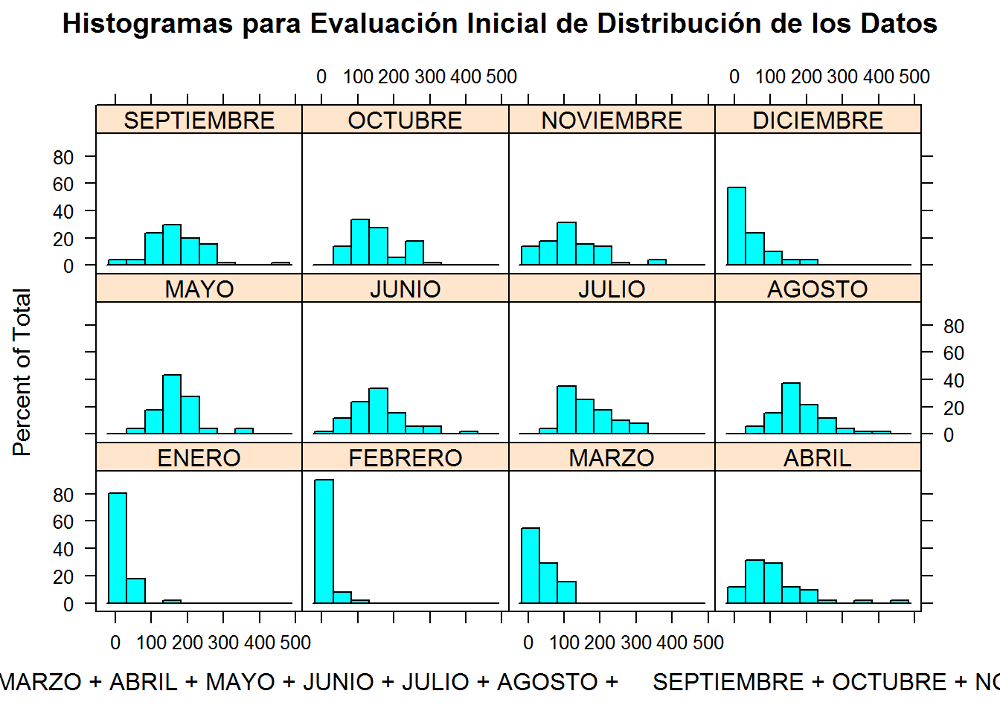
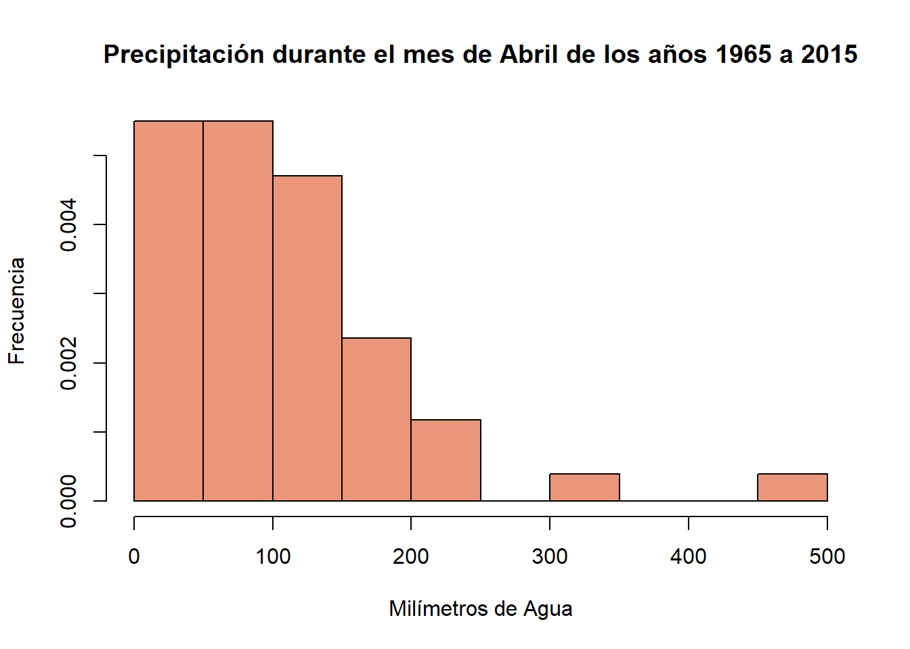
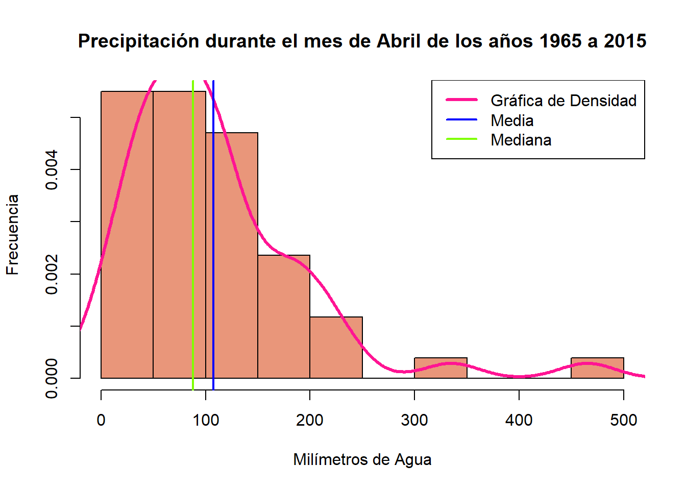
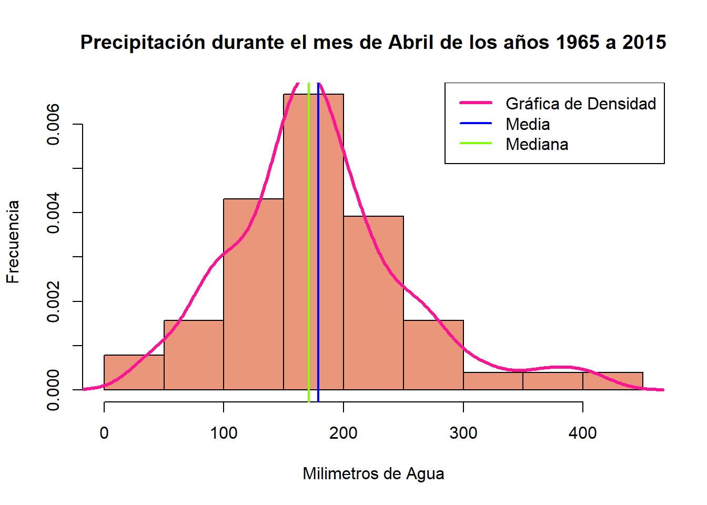

Capítulo 8 Taller R
8.1 ¿Cómo instalar las herramientas?
8.1.1 Instalando R
Las herramientas que utilizaremos será la última versión liberada del software (al momento de hacer éste taller la versión actual es R 3.4.1):
- Para usuarios Windows.
- Para usuarios MacOS
- Para usuarios Linux:
8.1.2 Instalando RStudio (Integrated Development Environment para R)
El utilizar un IDE simplifica considerablemente el trabajo a realizar con R.
Instalaciones para:
8.2 ¿Qué es R?
8.2.1 Historia
- R fué desarrollado a partir de S, un lenguaje desarrollado en Bell Labs por John Chambers y colaboradores.
- S inicialmente se corría con librerías de Fortran.
- En 1988 S fué reescrito en C, un lenguaje que también fué desarrollado en Bell Labs.
- En el libro Statistical Models in S (conocido como el white book) se documentan la funcionalidad para análsis estadísticos a éste nivel de desarrollo de S.
- La versión 4 de S se liberó en 1998 y se parece mucho a los softwares actuales derivados de S: R y S-PLUS. El libro Programing with Data (conocido como el green book) por John Chambers documenta ésta versión del lenguaje.
- La filosofía de S:
- “Queríamos que los usuarios pudieran empezar en un ambiente interactivo, donde ellos no se pensaran, de forma conciente, como programadores. Posteriormente, mientras sus necesidades se hacían más claras y su sofisticación aumentara, podrían”deslizarse" hacia la programación, cuando el lenguaje y el sistema como realizara los procesos se volvieran más importantes para ellos." (Chambers 2000)
- R fué desarrollado a partir de S en Nueva Zelanda por Ross Ihaka y Robert Gentleman. Su experiencia en el proceso está documentada en un paper publcado por la Universidad de Auckland, NZ.
- En 1993 se libera por primera vez al público.
- En 1997 se forma el R Core Group con gente asociada a S-PLUS. Éste grupo controla el código fuente de R.
- En 2000 se libera R version 1.0.0
- El 7 de Marzo de 2017 se libera R version 3.3.3
8.2.2 Generalidades
- La sintaxis de R es muy similar a S mas no su semántica.
- El software es ligero, la funcionalidad del mismo está dada en un formato modular, a través de paquetes.
- Las capacidades gráficas son sofisticadas y mejores que la mayoría de los paquetes estadísticos.
- Funciona para realizar actividades de interacción pero también contiene un poderoso lenguaje de programación para el desarrollo de nuevas herramientas (usuario->programador).
- La comunidad R es muy activa y dinámica.
8.3 ¿Cómo obtener ayuda?
Como se ha comentado en las secciones anteriores, la comunidad R es muy activa, uno de los lugares donde usualmente se obtienen buenas orientaciones es en Stack Overflow. Otro lugar donde se pueden obtener información sobre una función o paquete en específico es en la documentación del paquete que se instala al descargar el mismo. En el siguiente ejemplo se puede ver cómo se explora el comando plot de los paquetes base de R:
?plot
Una vez que entiendo cómo trabaja la función plot entonces puedo probar con datos y ver qué obtengo. Ésta es una manera frecuente de resolver dudas o problemas de código.
plot(cars)
Otro buen lugar para obtener información son las cheat sheets, publicadas por RStudio en su mayoría.
Un recurso muy utilizado es la búsqueda en Google.
Los cursos en línea han tenido un significativo auge en los últimos años, comparto algunos que considero valen la pena, ésta lista no es exhaustiva:
8.4 Entrada de datos y su evaluación en la consola
Una vez que abrimos la consola R podemos empezar a escribir en el R prompt, los caracteres que se ingresan al R prompt se le llaman expresiones, hay algunas reglas básicas para entrar expresiones:
- <- es el símbolo que se utiliza como operador de asignación, también es posible utilizar =.
- #: R interpreta todo lo que esté a la derecha de éste símbolo como un comentario y no lo toma en cuenta para cálculos.
Ejemplos:
x <- 1 #No se imprime nada, solo se creó un nuevo objeto con un valor numérico.
print(x) #impresión explícita## [1] 1msg <- "hello" #No se imprime nada, se creó el objeto `msg` con valores `string` o `character`
msg #auto-impresión## [1] "hello"x #auto-imrpesión## [1] 18.5 Estructuras de datos en R
8.5.1 Clases básicas de objetos
R tiene 5 clases básicas o atómicas de objetos:
- Character
- Valores cualitativos con escalas nominales u ordinales.
- Numeric (números reales)
- Números con valores cuantitativos con escalas continuas.
- Entre un valor y otro hay infinito de otros valores.
- Integer
- Números completos, sin fracciones, pueden ser positivos o negativos.
- Conocidos como valores cuantitativos con escalas discretas.
- Equidistancia entre un valor y otro.
- Complex
- Logical (booleans/binarios/falso-verdadero)
- Valores con solo dos opciones posibles, ambas mutuamente exclusivas y opuestas.
El objeto más básico es el vector:
- Un vector solo puede contener objetos de la misma clase.
- La lista permite contener objetos de distintos tipos como un vector.
8.5.2 Atributos
Se puede accceder a los atributos de un objeto en R a través de la función attributes(). La información que R entregue será la siguiente:
names/dimnames- Nombres y/o nombres de dimensiones.
dimensions- En el caso de matrices y arreglos.
class- Clase del objeto.
length- Longitud del objeto.
- Otros atributos y metadata definidos por el usuario.
8.6 Utilizando R y RStudio
En esta sección nos apoyamos con las ilustraciones de Carlos Pérez González y Marcos Colabrook Santamaría (Carlos Pérez-González 2014)
8.6.1 Componentes RStudio
Lo primero que haremos es abrir RStudio y explorar los componentes básicos:
8.6.2 Iniciando un proyecto
8.6.2.1 Paso 1
En la esquina superior derecha, identifica el ícono de projecto y da click en él.
8.6.2.2 Paso 2
Puedes elegir crear el proyecto en un directorio que ya exista o crear un directorio nuevo para iniciar. Aún puedes conectar tu projecto a algún administrador de versiones (Git/GitHub).
8.6.2.3 Paso 3
Por ahora la opción empty project es la que utilizaremos.
8.6.2.4 Paso 4
Selecciona el nombre del directorio así como el folder donde se creará en tu ordenador.
8.6.2.5 Paso 5
Al completar los pasos, tu sesión de RStudio debería verse como se muestra en la imagen.
8.6.3 Cargando los datos
Hay muchas maneras de cargar datos a R, se puede hacer con líneas de código desde la consola, a través de paquetes preinstalados que ayudan a leer datos en formatos específicos o através de los íconos de RStudio. La siguiente imagen muestra cómo realizar el proceso a través de RStudio:
Para éste ejercicio utilizaremos una base de datos que se puede obtener aquí provista amablemente por la compañera Pamela.
Si realizamos el ejercicio desde RStuio se producirá el siguiente código con el siguiente resultado.
Toma en cuenta que la dirección cambiará dependiendo dónde haz guardado el archivo.
library(readr)
example <- read_csv("D:/Dropbox/MsC UABC/2o Semestre/Clases/Estadistica/estadistica-syllabus/datasets/example.csv")
head(example)## # A tibble: 6 x 17
## X1 `A\xd1O` EST ENT ENERO FEBRERO MARZO ABRIL MAYO JUNIO
## <int> <dbl> <int> <int> <dbl> <dbl> <dbl> <dbl> <dbl> <dbl>
## 1 NA NA NA NA NA NA NA NA NA NA
## 2 NA NA NA NA NA NA NA NA NA NA
## 3 1 1965 4 7 18.83 10.02 36.22 102.36 159.6 149.47
## 4 2 1966 4 7 22.00 1.00 0.00 98.00 197.0 141.20
## 5 3 1967 4 7 6.00 40.00 0.00 41.00 137.0 215.00
## 6 4 1968 2 1 20.40 4.60 45.00 100.00 153.8 165.60
## # ... with 7 more variables: JULIO <dbl>, AGOSTO <dbl>, SEPTIEMBRE <dbl>,
## # OCTUBRE <dbl>, NOVIEMBRE <int>, DICIEMBRE <int>, VR <int>8.6.4 Preparando la base de datos
De entrada vemos que la base de datos podría “limpiarse” si se eliminaran las filas 1 y 2 así como la columna 1 ya que no aportan información relevante.
example <- example[-1:-2,-1] #Estamos creando un subconjunto de `dataset` que se compone de todos los elementos de la base de datos menos las filas 1 y 2 así como la columna 1.
colnames(example)[1]<-"Año" #Arregla el problema de caracter en la variable "Año"
head(example)## # A tibble: 6 x 16
## Año EST ENT ENERO FEBRERO MARZO ABRIL MAYO JUNIO JULIO
## <dbl> <int> <int> <dbl> <dbl> <dbl> <dbl> <dbl> <dbl> <dbl>
## 1 1965 4 7 18.83 10.02 36.22 102.36 159.6 149.47 154.37
## 2 1966 4 7 22.00 1.00 0.00 98.00 197.0 141.20 158.00
## 3 1967 4 7 6.00 40.00 0.00 41.00 137.0 215.00 110.00
## 4 1968 2 1 20.40 4.60 45.00 100.00 153.8 165.60 156.40
## 5 1969 2 1 5.00 0.00 1.00 222.00 102.0 191.00 124.00
## 6 1970 2 1 140.00 3.00 105.00 116.00 176.0 302.00 158.00
## # ... with 6 more variables: AGOSTO <dbl>, SEPTIEMBRE <dbl>,
## # OCTUBRE <dbl>, NOVIEMBRE <int>, DICIEMBRE <int>, VR <int>Con respecto a datos faltantes podemos ver que en la última fila, correspondiente al año 2015, los valores correspondientes al mes de Noviembre y Diciembre están faltantes. Para solucionar éste debemos implementar algún método de imputación de datos para calcular los valores faltantes. El proceso a seguir depende de cada área del conocimiento.
8.6.5 Visualización de datos para análisis exploratorios
8.6.5.1 Buscando tipo de distribución en los datos
Para poder evaluar de una manera más cómoda y rápida, vamos a generar histogramas de la distribución de los datos contenidos en todas las variables (columnas) de nuestra base de datos, en éste caso necesitariemos hacer 12 histogramas y compararlos juntos.
Utilizaremos el paquete lattice para ésta tarea en específico.
- Los paquetes se instalan con la funcion
install.packages()dentro de los parentesis se pone el nombre del paquete entre comillas. - Una vez instalado el paquete se debe llamar a la consola con la función
library()y el nombre del paquete dentro de los paréntesis sin comillas.
#install.packages("lattice")
library(lattice)
histogram( ~ ENERO +FEBRERO +MARZO +ABRIL +MAYO +JUNIO +JULIO +AGOSTO +SEPTIEMBRE +OCTUBRE +NOVIEMBRE +DICIEMBRE, data = example, main = 'Histogramas para Evaluación Inicial de Distribución de los Datos')
Ésta información se puede obtener también con la función summary():
summary(example)## Año EST ENT ENERO
## Min. :1965 Min. :1.000 Min. :1.000 Min. : 0.0
## 1st Qu.:1978 1st Qu.:1.000 1st Qu.:1.000 1st Qu.: 0.0
## Median :1990 Median :1.000 Median :1.000 Median : 7.0
## Mean :1990 Mean :1.549 Mean :1.353 Mean : 18.4
## 3rd Qu.:2002 3rd Qu.:2.000 3rd Qu.:1.000 3rd Qu.: 21.2
## Max. :2015 Max. :4.000 Max. :7.000 Max. :140.0
##
## FEBRERO MARZO ABRIL MAYO
## Min. : 0.0 Min. : 0.00 Min. : 0.0 Min. : 55.0
## 1st Qu.: 0.0 1st Qu.: 0.00 1st Qu.: 50.0 1st Qu.:136.5
## Median : 2.0 Median : 28.80 Median : 88.0 Median :167.0
## Mean : 10.5 Mean : 36.46 Mean :107.5 Mean :169.8
## 3rd Qu.: 12.5 3rd Qu.: 51.00 3rd Qu.:139.0 3rd Qu.:197.5
## Max. :113.0 Max. :132.00 Max. :465.0 Max. :367.0
##
## JUNIO JULIO AGOSTO SEPTIEMBRE
## Min. : 16.0 Min. : 60.0 Min. : 39.0 Min. : 30.1
## 1st Qu.:111.0 1st Qu.:110.0 1st Qu.:141.5 1st Qu.:123.0
## Median :143.0 Median :156.4 Median :171.0 Median :166.5
## Mean :155.7 Mean :162.8 Mean :179.1 Mean :171.3
## 3rd Qu.:189.5 3rd Qu.:198.1 3rd Qu.:212.0 3rd Qu.:217.0
## Max. :388.0 Max. :311.0 Max. :402.0 Max. :455.0
##
## OCTUBRE NOVIEMBRE DICIEMBRE VR
## Min. : 32.0 Min. : 0.00 Min. : 0.00 Min. : 396
## 1st Qu.:104.5 1st Qu.: 66.75 1st Qu.: 12.50 1st Qu.:1145
## Median :132.8 Median :105.50 Median : 29.00 Median :1297
## Mean :152.2 Mean :117.68 Mean : 46.28 Mean :1295
## 3rd Qu.:185.0 3rd Qu.:155.75 3rd Qu.: 64.75 3rd Qu.:1466
## Max. :289.0 Max. :374.00 Max. :208.00 Max. :1957
## NA's :1 NA's :1De los resultados generados por summary() se pueden obtener la siguiente información de cada variable:
- Media
- Mediana
- Rango Intercuartil
- Valor mínimo
- Valor máximo
8.6.5.2 Medidas de tendencia central
Seleccionaremos los meses de Abril y Agosto para calcular medidas de tendencia central, de los histogramas previos podemos intuir que uno de éstos meses tiene un “comportamiento normal” y el otro no. Para éste ejercicio utilizarmos el generador de gráficas que viene con los paquetes báiscos cuando se instala R.
8.6.5.2.1 Distribuciones no Normales
Gráfica Base
hist(example$ABRIL, #Histograma base
col = "darksalmon", #color del relleno de las barras
border = "black", #color del borde de las barras
prob = TRUE, #le indica a R que los histogramas se realizaran en base a densidad y no a cantidad.
xlab = "Milímetros de Agua",
ylab = "Frecuencia",
main = "Precipitación durante el mes de Abril de los años 1965 a 2015")
Para una lista de los colores que puedes utilizar con las gráficas base de R puedes consultar aquí.
Medidas de Tendencia Central
Una vez que la gráfica base está desarrollada, procederemos a agregar la curva de distribución, las líneas de media y mediana.
hist(example$ABRIL, #Histograma base
col = "darksalmon", #color del relleno de las barras
border = "black", #color del borde de las barras
prob = TRUE, #le indica a R que los histogramas se realizaran en base a densidad y no a cantidad.
xlab = "Milímetros de Agua",
ylab = "Frecuencia",
main = "Precipitación durante el mes de Abril de los años 1965 a 2015")
##Distribución##
lines(density(example$ABRIL), #Línea base de distribución
lwd = 3, #ancho de la linea
col = "deeppink" #color of line
)
##Media##
abline(v = mean(example$ABRIL), #Línea base
lwd = 2, #Ancho de línea
col = "blue" #Color de línea
)
##Mediana##
abline(v = median(example$ABRIL), ##Línea básica
lwd = 2,
col = "chartreuse")Leyenda
hist(example$ABRIL, #Histograma base
col = "darksalmon", #color del relleno de las barras
border = "black", #color del borde de las barras
prob = TRUE, #le indica a R que los histogramas se realizaran en base a densidad y no a cantidad.
xlab = "Milímetros de Agua",
ylab = "Frecuencia",
main = "Precipitación durante el mes de Abril de los años 1965 a 2015")
##Distribución##
lines(density(example$ABRIL), #Línea base de distribución
lwd = 3, #ancho de la linea
col = "deeppink" #color of line
)
##Media##
abline(v = mean(example$ABRIL), #Línea base
lwd = 2, #Ancho de línea
col = "blue" #Color de línea
)
##Mediana##
abline(v = median(example$ABRIL), ##Línea básica
lwd = 2,
col = "chartreuse")
##Leyenda
legend(x = "topright", #Dónde se va a ubicar la leyenda con relación a la gráfica
c("Gráfica de Densidad", "Media", "Mediana"),
lwd = c(3,2,2),
col = c("deeppink", "blue", "chartreuse"))
8.6.5.3 Distribuciones Normales
AGOSTO
Realiza el mismo proceso para obtener una gráfica del mes de AGOSTO como la que se presenta abajo: 
8.7 ¿Cómo compartir datos y análisis con estadísticos o científicos de datos?
Una breve guía de cómo compartir datos con personas que se dedican a la estadística o ciencia de datos (Leek 2016), Jeff Leek dice que los datos compartidos deben venir ordenados en cuatro grandes grupos/folders/repositorios:
- Datos crudos.
- Datos que no han sido manipulados por ningún software de minería de datos o algún otro.
- Una base de datos “arreglada” (tidy dataset).
- Cada fila una instancia/paciente/ente a medir.
- Cada columna una variable.
- Cada celda un valor de la variable correspondiente.
- Un libro de códigos que explique cada variable y sus valores en en la base de datos “arreglada”.
- Una receta explícita y exacta de lo que se hizo para ir de 1 –> 2,3, étc
References
Chambers, John. 2000. “Stages in the Evolution of S.” March. http://ect.bell-labs.com/sl/S/history.html.
Carlos Pérez-González, Marcos Colebrook-Santamaría. 2014. “Curso Introductorio de R: Introducción a La Interfaz de Rstudio.” http://mcolebrook.github.io/CursoRStudio/RStudio.html#(1).
Leek, Jeff. 2016. “How to Share Data with a Statistician.” November. https://github.com/jtleek/datasharing.